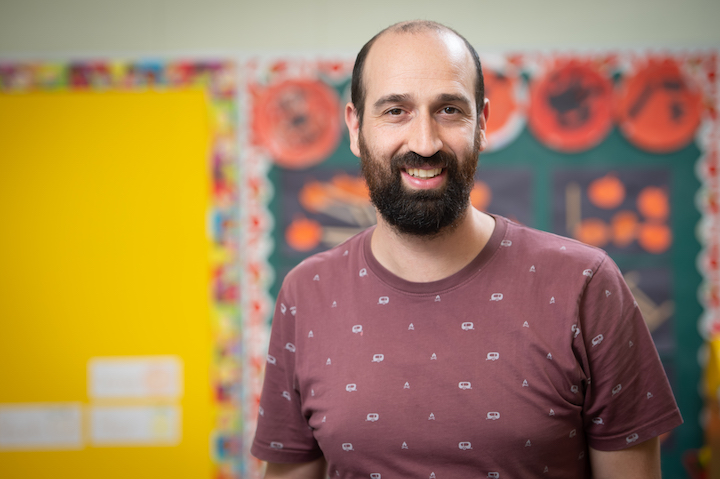
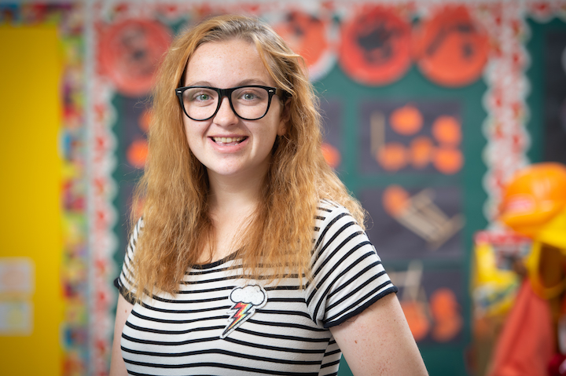

info@wvcp.ca
470 roosevelt avenue
ottawa, on K2A 1Z6
613.728.9473
The educations of the Westboro Village Cooperative Preschool's students get a big extra boost from the additional daily help of a co-op member, performing their duty day, but their complete educational needs will be met by our outstanding, qualified and caring staff.
In our classroom, your preschooler will learn through play, and be helped along on these first steps onto the paths of education by the following capable hands:
Sabina Provorna, WVCP Director and Senior Teacher

Sabina graduated from the Early Childhood Education program at Algonquin College in 2010. She started her journey as an educator by working at a licensed daycare within both the preschool and toddler programs for 2.5 years, then transitioned to the Ottawa Carleton District School Board, teaching the Full Day Kindergarten program, for 6 years. Having worked in the school setting, Sabina has a solid understanding of the kindergarten curriculum and knows what skills and knowledge components children need in order to make a smooth transition into a school environment.
Sabina strongly believes that learning is most effective through inquiry, play and exploration. She is determined to foster an environment that builds on children's natural curiosity, ideas, abilities and life experiences. Additionally, She is well acquainted with and understands the intricacies of working with children that have Autism, developmental or physical disabilities, and those who may be learning English for the first time.
Sabina is looking forward to working with our fantastic team, parents and children, and firmly believes that communication between parents and teachers is essential in the success of the WVCP program. Sabina will always strive to make the WVCP program enriching, safe, secure and a fun place for our children to be.
Lawrence Humber, WVCP Co-Educator
Lawrence is a former WVCP parent working towards completing the Early Childhood Education diploma at Algonquin College, and has been part of WVCP for many years. His children attended the school, he worked as a substitute teacher and most recently a junior teacher. He holds a Master's Degree in Political Philosophy, including a major research paper on Rousseau's Emile, a work that focuses on the education of a young child. In addition to this research interest in education, he has long enjoyed spending time with young children. He's also bilingual and happy to expose children to new language and learning experiences.
Taylor Cape, WVCP Co-Educator
Taylor is a graduate of the early childhood education program at Algonquin college. She uses her 8 years experience in different forms of dance and training in gymnastics to introduce children to different creative forms of expression, discovery and play.
Taylor is extremely excited to be joining the Westboro Village Cooperative Preschool teaching team. She is also excited to meet and work with amazing educators, children and families. She plans on creating curriculums and maintaining an environment that fosters children's natural curiosity, exploration and discovery.